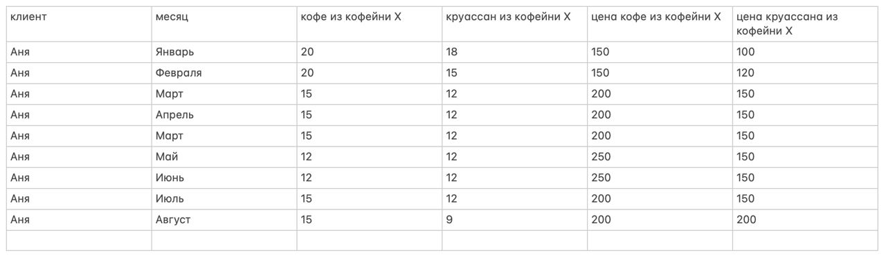

Второе домашнее задание#
В каждой задаче есть “задумка автора”, но если вы не отгадаете ее, вы все равно можете получить за нее высокие баллы, если аргументируете свои действия.
Постарайтесь отвечать коротко и по делу. Объясняйте, как и что вы сделали, и аргументируйте свои выводы. Выкладки должны показать как вы пришли к ответу, но они не являются самоцелью.
Используйте https://wolframalpha.com, если необходимо решить что-то нелинейное.
Древние свитки (5 баллов)#
Согласно древним свиткам, в диету типичного крестьянина входят 3 основных продукта: мясо (\(m\)-meat), птица (\(b\)-bird) и овощи (\(v\)-vegetables). Доля овощей в расходах составляет 1/4, птица 1/6, а мясо 1/12. Оставшаяся доля приходится на все остальные продукты (такие как хлеб и картофель) вместе взятые (\(o\)-other).
В середине 17 века произошла эпидемия, в результате которой умерла большая часть домашнего скота. Цены на мясо выросли в на 75% а птицу на 50%. В качестве умственного эксперимента, мы хотим хочет посчитать, в процентах, насколько обеднели крестьяне в результате этого события.
(1/2 балла) Воспользуйтесь моделью Кобб Дугласа. Самостоятельно откалибруйте модель на основании данных и сосчитайте полную компенсирующую вариацию.
(1 балл) Посчитайте компенсирующую вариацию в первом и втором приближении. Насколько сильно различаются ответы? Объясните, почему.
Потратив немного времени, я отыскал статью, в которой посчитаны экономические показатели для типичного сельского жителя. Хиксианские эластичности спросов по собственным ценам все равны примерно \(\varepsilon^c_{m/m} = -1.5\), \(\varepsilon^c_{b/b} = -1\), \(\varepsilon^c_{v/v} = -1\), \(\varepsilon^c_{o/o} = -.5\). А вот Хиксианкие перекрестные эластичности (мяса по птице, птицы по овощам и мяса по овощам) были оценены как \(\varepsilon^c_{m/b} = .8\), \(\varepsilon^c_{b/v} = .3\), \(\varepsilon^c_{m/v} = .1\). Наконец, Маршалианские эластичности спроса по доходу равны \(\varepsilon_{m/I} = .7\), \(\varepsilon_{b/I} = .8\), \(\varepsilon_{v/I} = .3\), \(\varepsilon_{o/I} = .4\).
(1/2 балла) Какие из новых данных представляют для вас интерес? Объясните и сравните их с Кобб-Дугласом.
(3 балла) Пользуясь новыми данными, посчитайте компенсирующую вариацию во втором приближении. Насколько сильно и в какую сторону изменился ваш ответ по сравнению с предыдущим подходом? Объясните, почему.
Бутлегеры (2 балла)#
1930 год, и на Диком Западе действует сухой закон. Предприниматель Артур Морган решил заняться незаконным производством виски. Артур уверен, что он единственный бутлегер в своем городе.
Артур знает, что для алкогольных напитков, эластичность спроса по цене в его городе составляет \(-1.5\), а эластичность спроса по доходу \(1.5\). Артур также знает, что ему понадобится:
один перегонный аппарат стоимостью 35 долларов,
сахар стоимостью 1 доллар за килограмм,
вода и дрожжи,
а из одного килограмма сахара получается приблизительно 1 литр виски. Вода и дрожжи ничего не стоят. Однако шериф города намекнул, что “надо делиться” в размере 1 доллар за каждый литр проданного виски.
(1 балла) Какую цену назначит Артур за 1 литр виски?
(1/2 балла) Сколько литров надо продать, чтобы окупить перегонный аппарат?
(1/2 балла) Какую минимальную прибыль получит Шериф в случае сделки?
Львиное Сердце (1 балл)#
Чтобы вызволить Короля Ричарда Львиное Сердце из плена, необходимо собрать 100 тысяч марок с английских крестьян.
Брат короля хочет обложить налогом крестьян, причем поведение у них как в древних свитках.
Вопрос (1/2 балла): Предположим что вы можете обложить налогом только один товар: мясо, птицу или овощи. Какой товар вы выберете? Объясните.
Вопрос (1/2 балла): Предположим что вы можете обложить дифференциированным налогом все три товара. Опишите свой налог. Объясните свой выбор.
Мужики и хипстеры (6 баллов)#
В стране два типа потребителей: хипстеры и настоящие мужики, которые потребляют три вида товаров: мясо (\(x\)), рыбу (\(y\)) и хлеб (\(z\)). Цены мяса и рыбы обозначим за \(p,q\) а цену овощей нормируем к единице. Считается, что их полезность имеет следующую функциональную форму
будем считать что доход мужиков \(I_m\) и хипстеров \(I_h\) достаточно большой, чтобы решение было внутреннее.
(1 балл) Выпишите Лагранжиан в задаче потребителя мужика
(1 балл) Выпишите условия первого порядка
(1 балл) В точке \(p = q = 1\), посчитайте эластичности спроса мужика на мясо и рыбу по собственным ценам, а также перекрестную эластичность
(1 балла) Выпишите Лагранжиан в задаче потребителя хипстера
(1 балла) Вычислите спрос на мясо и рыбу
(1 балл) В точке $p = q = 1, посчитайте эластичности спроса хипстера на мясо и рыбу по собственным ценам, а также перекрестную эластичность
Кофейня X (6 баллов)#
У вас есть часть данных о тратах Ани в кофейне Х.
{kind=link}
(2 балла) Используя здравый смысл, аргументируйте, являются ли круассан и кофе нормальными товарами, субститутами или комплементами? Можете ли вы найти этому подтверждение в данных? Объясните.
(1 балл) Какую из четырех полезностей: CES, Cobb-Douglas, Leontieff, Linear вы бы выбрали для описания потребителя? Объясните свой выбор и придумайте способ откалибровать ее.
(1/2 балл) Оцените средний бюджет Ани, считайте что это модельный \(I\). Оцените средние цены, считайте что это модельные \(p,q\). Не обращайте внимание на растущий тренд.
Один из менеджеров кафе предлагает ввести в сентябре карту постоянного клиента с подпиской на кофе по цене S рублей в месяц (или в процентах от среднего бюджета Ани), по которой кофе для держателя карты, оплатившего подписку, будет стоить в два раза дешевле.
(1/2 балл) Дайте быстрый приближенный ответ, сколько должна (максимум) стоить такая карта, чтобы Аня было выгодно ее купить?
(2 балл) Дайте точный ответ основываясь на полностью откалиброванной модели. Часть выкладок можно опустить, но опишите основные шаги рассуждения.